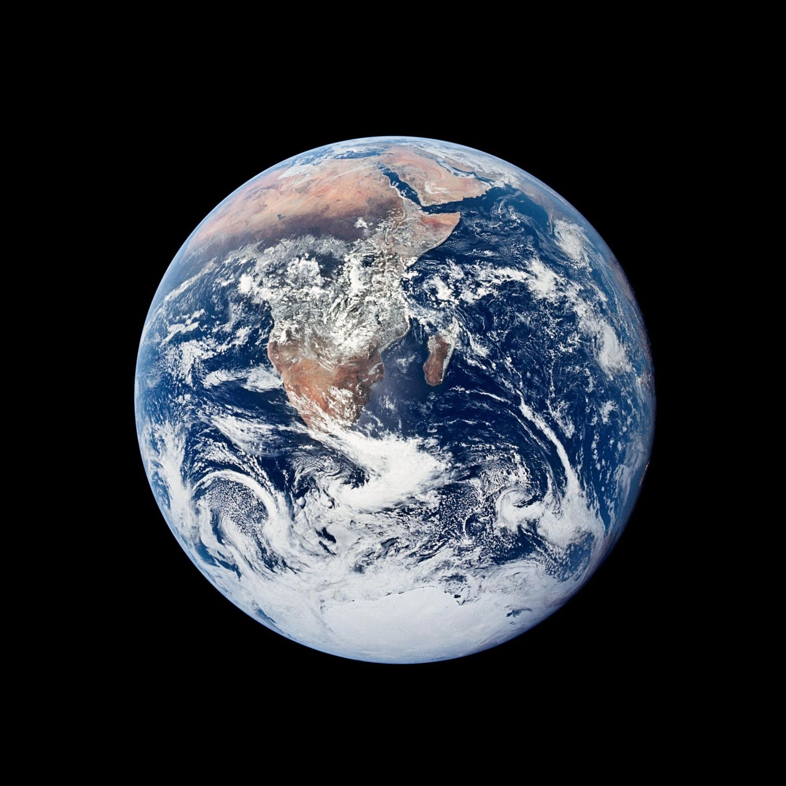
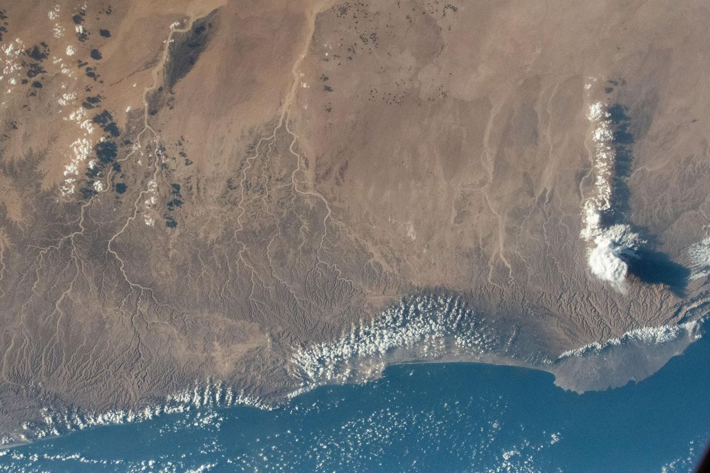
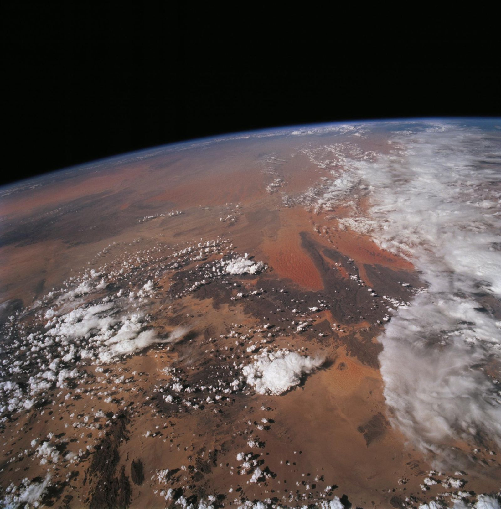

Part 1: Planet Earth · Chapter 1 of 15
Our Earth
A calm blue planet on the outside, a restless engine underneath.

Seen from space, the Earth looks peaceful: blue oceans, white swirls of cloud, the brown and green of the continents. That calm is only skin deep. A few tens of kilometres below our feet the rock is hot enough to glow, and a few thousand kilometres down it is as hot as the surface of the Sun.
That inner heat keeps the planet moving. The rock of the deep interior is solid, yet over millions of years it creeps and churns like a very thick fluid. The thin, cold, rigid outer layer rides on top and is broken, bent and remade as it goes. Most of the time the movement is far too slow to notice: a few centimetres a year, about as fast as your fingernails grow.
Fast events, slow processes
Now and then the slow motion shows itself suddenly. An earthquake is the moment when rocks that have been straining against each other for decades finally slip. A volcanic eruption is the moment when molten rock that has been collecting underground finds a way out. Both are dramatic, but they are the visible edge of processes that never stop.

Other changes are slower still. Mountains are pushed up over millions of years and worn down again by rain, ice and wind. Rocks that formed on the sea floor end up on mountain tops; the mountains of Oman, for example, contain slices of ancient ocean floor. Coastlines move as the land rises or sinks and as sea level changes with the climate.
Weathering and erosion
At the surface, rock is constantly attacked. Weathering breaks it down where it stands: water freezes in cracks and splits them open, rainwater slowly dissolves some minerals, and plant roots pry rocks apart. Erosion then carries the loose material away, in rivers, glaciers, waves and wind. Over long periods, weathered rock mixed with the remains of plants and animals becomes soil, the thin layer that feeds almost all life on land.

Geology is the science of these processes: how rocks form, how they change, and what they record about the planet's past. This site follows that story from the birth of the Earth to the resources we take from it today.
Key terms
- molten
- Melted by intense heat. Molten rock is liquid rock.
- weathering
- The breaking down of rock at the surface by wind, rain, ice and living things.
- erosion
- The wearing away and carrying off of rock and soil by wind, water and ice.
- soil
- The loose top layer of the land, made of weathered rock mixed with the remains of plants and animals.
- sea level
- The average height of the surface of the sea. Heights on land are measured from it, and it changes over long periods.
- mountain range
- A line or group of mountains formed by the same movements of the earth.
Check your understanding
Think of your answer, then open each question to compare.
Roughly how fast do the Earth's outer layers move?
A few centimetres a year, about the speed at which fingernails grow.
What is the difference between weathering and erosion?
Weathering breaks rock down where it is; erosion carries the broken material away.
Why can rocks that formed under the sea be found on mountain tops?
Slow movements of the Earth's outer layer can lift sea-floor rock high above sea level over millions of years.